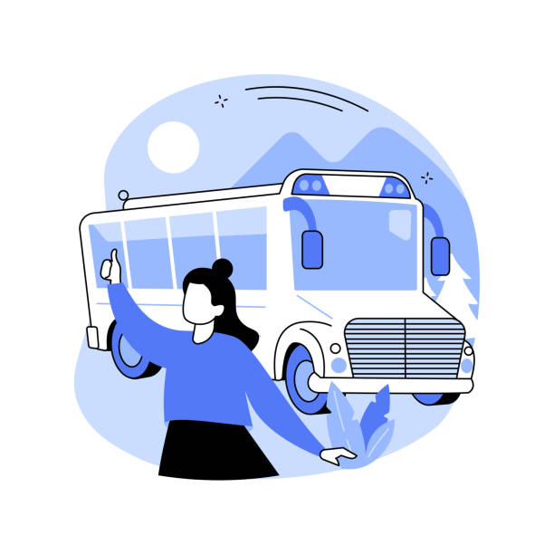

Sobre nós
O Instituto Juntos Pela Educação foi lançado em 2020, e foi concebido para dar uma resposta mais ampla à problemática socioeconômica que vive a população de baixa renda, uma conjuntura resultante dos efeitos cumulativos de gerações que começam e permanecem na base da pirâmide socioeconômica, e com poucas chances de ascensão social. Temos como objetivo apoiar os estudantes que são bolsista em escolas particulares e ajudar os estudantes de baixar renda em escolas públicas.Problemáticas centrais
Buscamos algumas problemáticas centrais e de acordo com nossas pesquisas encontramos as principais causas dessa falta de prioridade dos estudos:- - Priorizar os estudos precisando trabalhar para ajudar no sustento da casa.
- - Priorizar os estudos se precisa ajudar a cuidar dos irmãos pequenos
- - Priorizar os estudos se não tem dinheiro para transporte ou materiais escolares
- - Se interessar nos estudos levando em conta a precariedade da escola.
